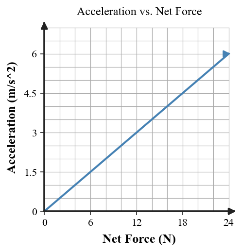
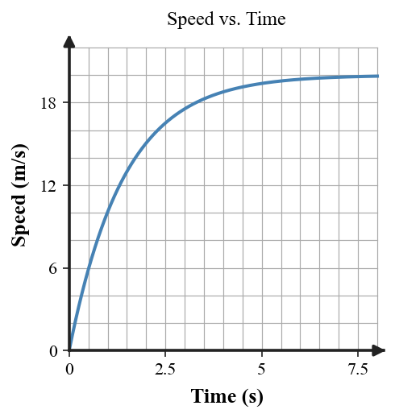

| 1A puck is already moving east when a stick briefly pushes it north. What causes the puck’s acceleration during contact: its motion or the net force? | 2Two 4-kg carts experience net forces of 8 N right and 20 N right. Which cart has the greater acceleration, and why? |
| 3The same 24-N net force acts on a 3-kg cart and a 6-kg cart. Calculate both accelerations and compare them. | 4A 5-kg cart has a 15-N net force to the left. Find its acceleration magnitude and direction. |
| 1A cart is moving right while 12 N acts left and 12 N acts right. What is its acceleration? Can it still be moving? Explain briefly. | 2The graph is for the same 4-kg cart. If net force doubles from 8 N to 16 N, what happens to acceleration?  |
| 3A 12-N net force acts on a 2-kg cart and then on a 6-kg cart. Find each acceleration and state the mass-acceleration pattern. | 4A 5-kg object moves left while a 10-N net force points right. Find the acceleration and describe how the leftward velocity begins to change. |
| 1Which statement is always true? A. A moving object must have a net force. B. Acceleration points in the direction of net force. C. Acceleration always points with velocity. D. Zero net force means zero velocity. |
2With net force fixed at 18 N, complete the acceleration pattern for masses 3 kg, 6 kg, and 9 kg.
|
||||||||||||
| 3What net force is required to give a 4-kg cart an acceleration of 3 m/s² west? Give magnitude and direction. | 4A student says, “If an object is moving east, there must be a net force east.” Correct the claim using a constant-velocity example and explain what evidence would show that a net force really is acting. |
| 1A crate is pushed to the right but does not move. Which direction does friction act? | 2A 40-N push does not move a cabinet. What must static friction be? If it later slides and friction is 28 N, which type of friction acts then? |
| 3An 8-kg tool is taken from Earth to the Moon. Which stays 8 kg—mass or weight—and which changes? | 4A box is pushed 70 N right while friction is 25 N left. Find the horizontal net force and acceleration direction. |
| 1A sled is sliding left across snow. Which direction does friction from the snow act, and why? | 2A heavy box stays at rest while pushes of 10 N, 25 N, then 40 N are applied. Describe how static friction changes before the box starts sliding. |
| 3A 6-kg object is near Earth where g = 10 m/s². Calculate its weight, then state its mass. | 4The box remains at rest. Use the diagram to find net force and explain why the applied force alone does not determine acceleration. |
| 1What type of friction opposes attempted sliding before an object begins to move? | 2Use the data to describe the difference between static friction before motion and sliding friction after motion begins.
|
|||||||||||||||
| 3A 12-kg object is on Earth (g = 10 m/s²) and then on a world where g = 2 m/s². Find its weight in both places and state what happens to its mass. | 4A student reports: “The box moves right at constant velocity while the applied force is 50 N right and friction is 30 N left.” Identify the conflict and revise either the force model or the motion description so they agree. |
| 1Classify each: a rock falling in a vacuum; a parachutist descending with an open parachute. Which is free fall and which is nonfree fall? | 2A coin and feather fall in a vacuum at the same location. Why do they have the same free-fall acceleration even though their weights differ? |
| 3A 6-kg falling object has weight 60 N downward and air resistance 20 N upward. Find net force and acceleration. Is its acceleration less than g = 10 m/s²? | 4A falling object has 60 N weight and 60 N air resistance. Find net force and acceleration, then describe its motion if it is already moving downward. |
| 1Complete the definition: Free fall occurs when ______ is the only significant force acting. | 2In a vacuum, a 5-kg object weighs 50 N and a 10-kg object weighs 100 N. Calculate each acceleration and compare them. |
| 3As the speed-time graph levels off, what happens to acceleration? What change in the forces causes that behavior?  |
4Two falling objects have the same weight and speed, but one has a much larger frontal area. Which is likely to have greater air resistance and the lower terminal speed? |
| 1Match the three force models to free fall, nonfree fall while accelerating downward, and terminal speed. | 2An 8-kg object has weight 80 N and air resistance 32 N upward. Find the acceleration and explain why it is less than g. |
| 3A compact ball and a broad coffee filter have the same mass and fall at the same speed. Which is likely to have more air resistance, and how does that affect its downward acceleration? | 4A student says, “At terminal speed gravity has stopped acting.” Correct the explanation using weight, air resistance, net force, acceleration, and downward velocity. |
| 1A student pushes on a wall. Name the two objects in the force interaction. | 2A foot pushes a soccer ball forward. Write the Newton’s Third Law partner force using “force of ___ on ___” wording. |
| 3A student pushes a wall with 30 N. What force magnitude does the wall exert on the student, and in what direction relative to the push? | 4Why are the upward support force and downward weight on one book not a Newton’s Third Law pair? |
| 1A tire pushes backward on the road. Identify the reaction force and the object it acts on. | 2During a car-bug collision, the interaction forces are equal. Why can the bug’s acceleration still be much larger than the car’s? |
| 3Two skaters push apart with 100 N on each other. Their masses are 50 kg and 25 kg. Calculate each acceleration magnitude and explain the difference. | 4The chosen system is person + skateboard; the wall is outside. Is the wall’s force on the person internal or external? Why does its Third Law partner not cancel it in the system’s net force? |
| 1In Physics, what is a “system”? | 2Choose the system as book + Earth, but not the table. Classify the Earth-book gravitational interaction as internal or external, and classify the table’s support force. |
| 3Two carts and the compressed spring between them are one system. Are the spring forces between the carts internal or external? Name one external interaction that could change the motion of the whole system. | 4A student says, “Action-reaction forces cancel, so neither object can accelerate.” Critique the statement by explaining where the two forces act and when forces actually can cancel in the net force on one chosen object. |
| 1What makes an object a projectile after it has been launched, assuming air resistance is ignored? | 2A ball rolls horizontally off a table at 4 m/s. How far horizontally does it travel in 3 s, and why can that horizontal speed stay constant? |
| 3A ball is dropped while an identical ball is launched horizontally from the same height at the same instant. Ignoring air resistance, compare their vertical accelerations and landing times. | 4Use the model to explain how constant horizontal velocity and downward acceleration combine to produce a curved trajectory. |
| 1Which is a projectile after launch? A. A ball after it leaves a player’s hand B. A rocket while its engine is still providing thrust C. A book resting on a table D. A car driving at steady speed |
2At the highest point of an ideal projectile, state the horizontal velocity, vertical velocity, and acceleration directions/values qualitatively. |
| 3A projectile has horizontal velocity 6 m/s and is in the air for 2 s. Find its horizontal displacement. What horizontal force is required to keep that velocity in the ideal model? | 4Equal-time snapshots show equal horizontal spacing but increasing downward spacing. What does each spacing pattern tell you about the horizontal and vertical components? |
| 1In the model, identify what the repeated horizontal arrows represent and what the repeated downward arrows represent. | 2A projectile moves horizontally at 5 m/s for 2.5 s. Find the horizontal distance traveled. |
| 3After a ball leaves a launcher there is no forward force, yet it keeps moving horizontally while accelerating downward. Explain why both statements are consistent. | 4The model is flawed: its horizontal velocity arrows shrink, and it shows an upward acceleration at the top. Identify both errors and describe the corrected horizontal velocity and vertical acceleration. |